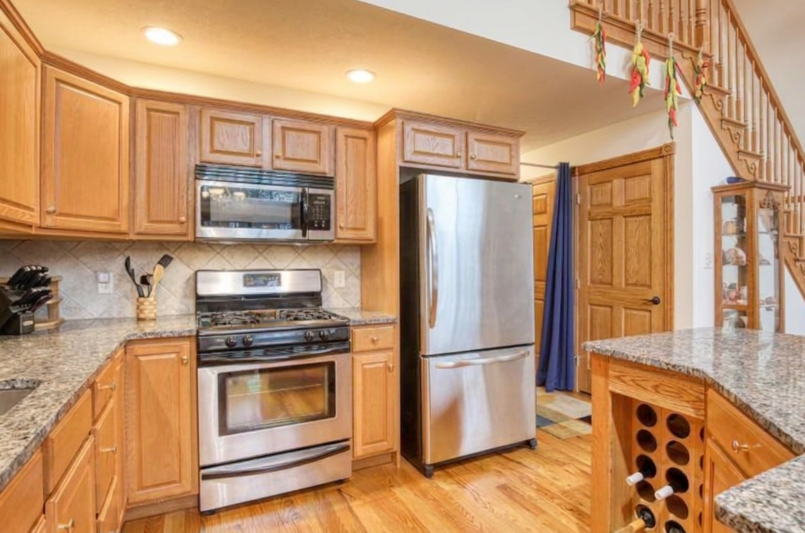
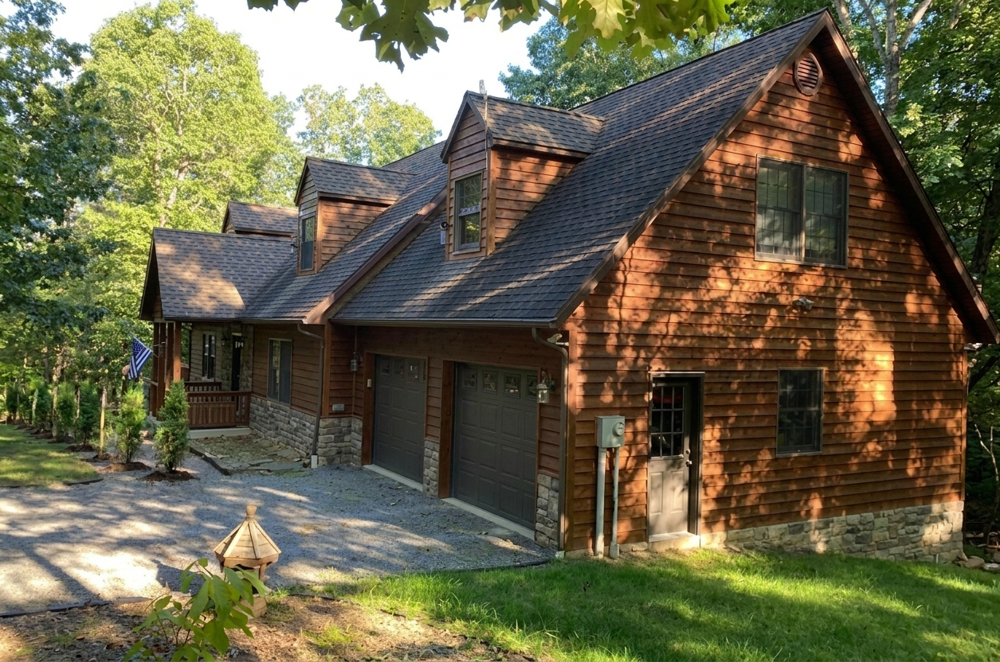
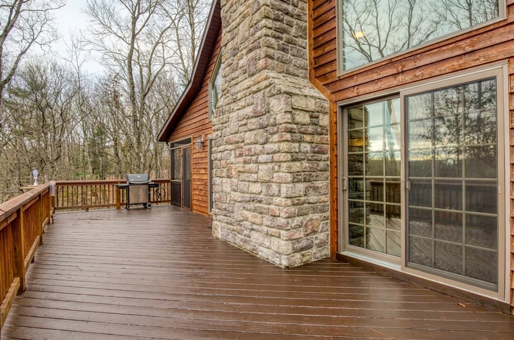
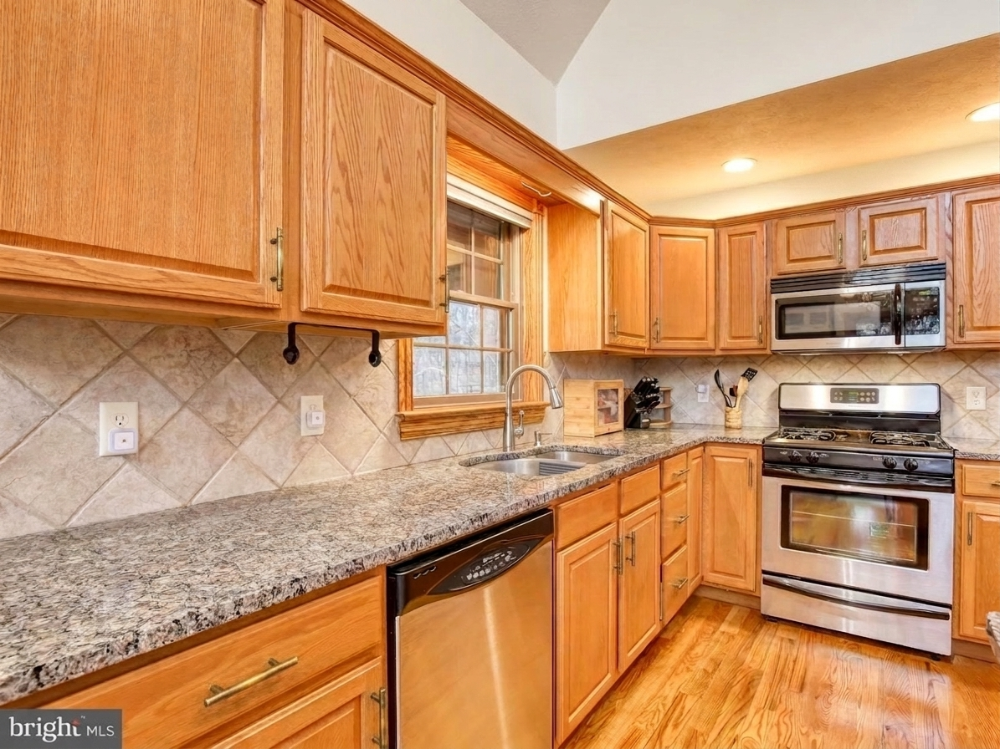
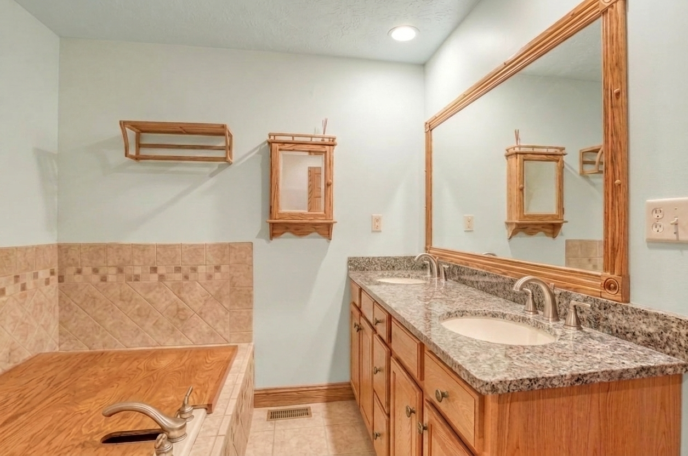
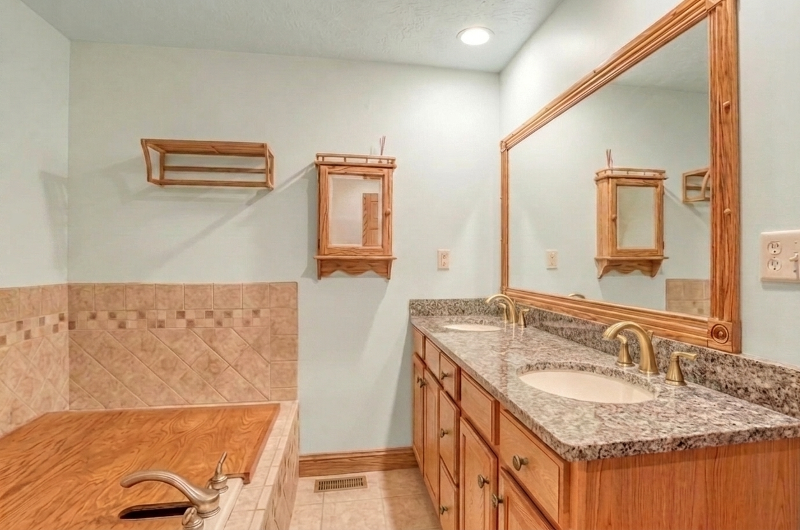

Four items to fetch top dollar, visualised and priced · 1 September 2026
· the colour scheme itself is in the Quilt & Stone brochure
· tracked as col-plb, col-4ig, col-2lb, col-wwp
Every image below is the actual house, edited to show the finished item.
Prices are budgeting ranges for the eastern West Virginia market: the low end is doing it
yourself with bought materials, the high end is hiring it out. Buyers price what they can
see; all four of these photograph.
1 — Painting, re-scoped 2 Sep · col-plb
The interior's whites stay as they are. Paint goes where it changes
something: the kitchen (Alabaster), the master bath (Sea Salt), the upstairs bath (Revere
Pewter over the pattern), the entry doors AND the garage doors in Pewter Green, and 810 sf
of deck and porch floor in walnut solid stain over the existing paint. The full Quilt &
Stone scheme stays on record in the brochure for whoever wants it later.

Interior repaintKitchen + two baths, 3 gal + 1
gal primer

Doors + garage doorsSW Pewter Green: front,
side, porch and both garage doors

Deck + porch floorsWalnut solid stain, 6 gal,
scuff-sand over the existing paint
The schedule, per the owner's count (2 Sep): four three-hole widespread
lavatory faucets — two in the master bath, one upstairs, one in the guest bath —
two shower trims, the roman tub trim on the jacuzzi, and the kitchen sink, which takes a
two-hole faucet (spout in the centre hole, its handle in the hole to the right) with the
soap dispenser in the third hole to the right of that. The table below prices the package
in Venetian Bronze, anchored by the owner-found Delta Portwood widespread at $149
at Home Depot.
The finish question. Delta does not make a true antiqued brass; their warm
brass is Champagne Bronze — brighter and more golden than the aged brass on
the doors, and typically a 20–40% premium over brushed nickel. Both are rendered
below on the master vanity, next to the antiqued brass knobs. Brushed nickel reads as the
quiet two-metal scheme; champagne bronze warms the baths but will always sit a shade
brighter than the door hardware.
Other solid brands, since you asked. Moen is Delta's closest peer -
same price band, lifetime warranty, Spot Resist brushed nickel, and their bronze family.
Pfister is the value tier below, still dependable. Kohler is a step up in price. Kingston
Brass is the budget route to a TRUE antique brass finish if matching the doors exactly
matters. And note: oil-rubbed bronze does not require leaving Delta at all - Delta calls it
Venetian Bronze, and it is rendered below as Option C. It is the darkest choice,
handsome with oak, and hides water spots best of the three. Concrete anchor, owner-found,
checked 2 Sep 2026: the Delta Portwood widespread in Venetian Bronze is $149 at Home
Depot - inside the brushed-nickel price range, so Option C carries no real premium.

KitchenHigh-arc pull-down, brushed nickel, with
the antiqued brass pulls

Option A — brushed nickelQuiet two-metal
scheme, cheapest tier

Option B — champagne bronzeWarmer, sits
with the brass, +20–40% on the bath faucets
Option C — oil-rubbed bronze (Delta Venetian Bronze)
Delta Portwood, $149 at Home Depot - no premium
Faucets, Venetian Bronze
Count
Materials
Plumber
Widespread lavatory, 3-hole (Delta Portwood, $149 at Home Depot)
4
$596
$600 – $1,000
Kitchen: 2-hole faucet, spout centre + handle right
1
$200 – $350
$150 – $300
Soap dispenser, third hole
1
$30 – $60
with faucet
Roman tub trim (jacuzzi)
1
$250 – $450
$150 – $400
Shower trim kits
2
$360 – $700
$300 – $500
Subtotal
9
$1,440 – $2,160
$1,200 – $2,200
Lavatory and kitchen swaps are honest DIY; the tub and shower trims depend
on whether the existing rough-in valves are Delta — if they are, trim-only kits drop
both cost and labour. Have the plumber confirm before ordering.
3 — Cabinet hardware · col-2lb
Chosen (revised 2 Sep 2026): antiqued brass bar pulls on the
kitchen doors and drawers, matching knobs on the bathroom vanities — the finish the
house's door hardware already wears, warm against the golden oak. Faucets stay brushed
nickel with the appliances: a deliberate two-metal scheme. About 44 pieces: roughly 26 in
the kitchen, 8 on the master vanity, 8 upstairs, 2 in the half bath. Costs are unchanged;
antiqued brass sits in the same bulk price band. In-situ renders are on the
marketing page.
Hardware
DIY
Handyman
~44 bar pulls + knobs, antiqued brass, bulk packs, with drilling jig
$200 – $400
+$150 – $300 install
Subtotal
$200 – $400
$350 – $700
4 — Landscaping · col-wwp
Four moves, all visible from the listing photos: an evergreen privacy row
along the west edge where the neighbouring cabin shows through the bare trees, the lawn
restored, the gravel drive regraded and topped, and a gravel path down to the firepit —
finished with the stone already on site, plus a steel insert ring and cap stones. The
firepit sits on the open lawn just east of the septic-cover garden ring and north of it,
toward the house — not at the shed.
The approachPrivacy row, restored lawn, fresh
gravel · entry and garage doors green
The back yard todayThe firepit will sit on the
open lawn east of the septic-cover garden; real photograph to come
The deck, stagedWalnut floor, the HotSpring
Flair at the far end of the deck
Landscaping
DIY
Contracted
Privacy trees, ~12–14 arborvitae/spruce along the west edge
$700 – $1,100 (3-gal)
$2,000 – $4,500 (5–6 ft, planted)
Lawn: topsoil patches + overseed (~8–10k sf)
$300 – $600
$800 – $1,800 hydroseed
Driveway: regrade + 2" gravel top-up (~20–30 ton)
$800 – $1,400 delivered, self-spread
$1,000 – $2,000
Gravel path to firepit, ~90 ft × 3 ft, fabric + gravel
$250 – $450
$400 – $1,000
Firepit completion: steel insert ring, cap adhesive, pad gravel
Where the money works hardest for a sale: paint and landscaping are
consistently the highest-return prep an owner can do, and the privacy row, the finished
firepit and the green front door all photograph — they feed the same 18-photo listing
set already locked. The faucet and hardware line matters most in person, at the showing,
where a buyer touches the kitchen first.